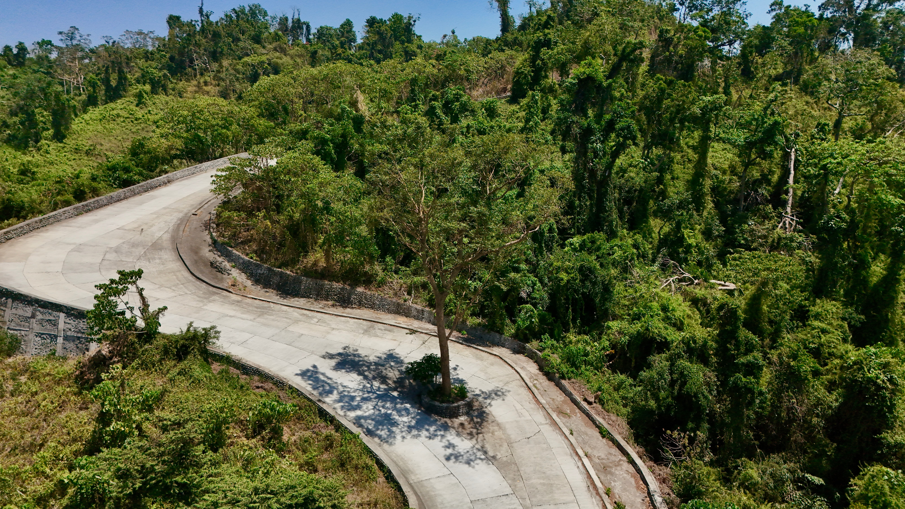
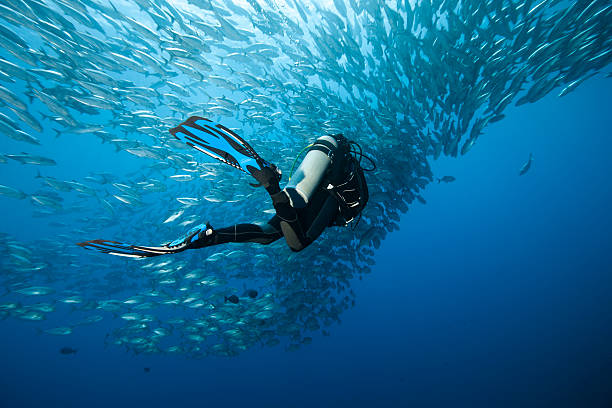
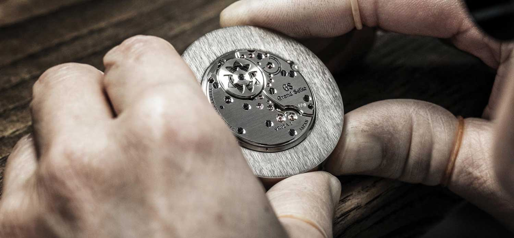
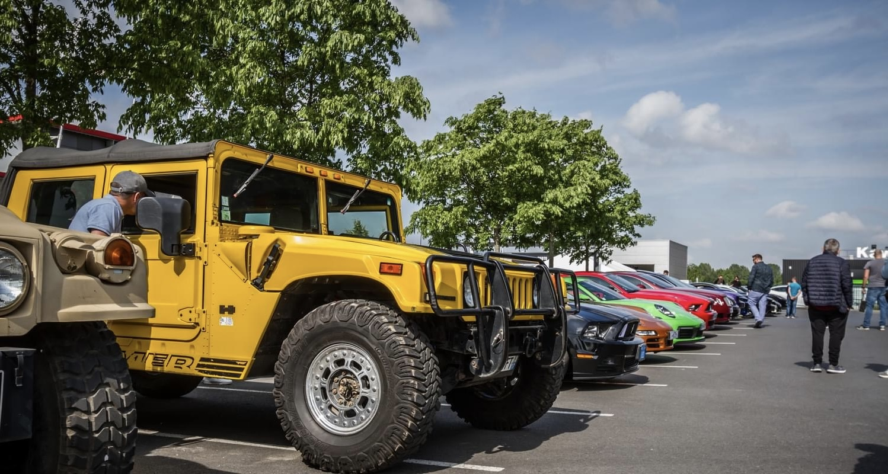
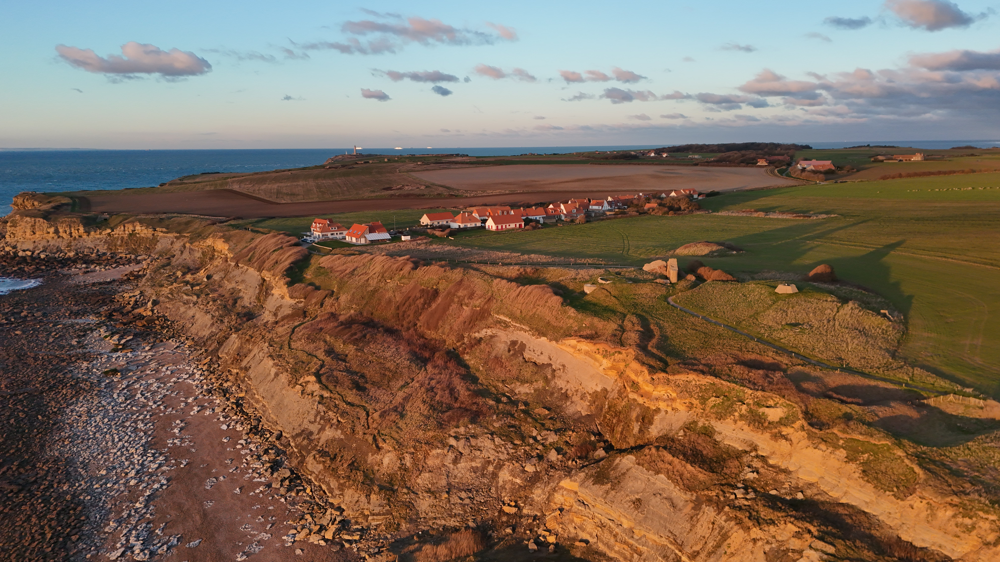

De nature curieuse et généraliste, j'apprends très rapidement. J'ai eu l'opportunité de travailler dans de nombreux secteurs différents, ce qui m'a permis de développer une forte capacité d'adaptation, d'autant plus dans un contexte international.
Curriculum Vitae
L'Icam fait partie des grandes écoles d'ingénieurs françaises et forme des ingénieurs généralistes capables de s'adapter à n'importe quel secteur d'activité. Le cursus est conçu pour en faire des profils polyvalents, capables de prendre la main sur un sujet nouveau et de se l'approprier rapidement.
Derrière l'ingénieur
Parce que les diplômes ne racontent qu'une partie de l'histoire, voici ce qui me construit au quotidien.

Avec plus de 28 pays visités à travers le monde, mon goût pour l'international a forgé une forte adaptabilité culturelle, avec une appétence toute particulière pour l'Asie. Ma plus grande aventure récente ? Un road trip moto engagé en solitaire de 3 000 km à travers l'île de Luzon, aux Philippines. L'inconnu est le meilleur des formateurs.

Plongeur certifié avec plus d'une quarantaine de descentes à mon actif dans des conditions très variées. Sous la surface, l'erreur n'a pas sa place : j'y ai développé une excellente gestion du stress, une maîtrise stricte des protocoles de sécurité et une grande rigueur technique.
Passionné par la finance et l'analyse de données, un véritable virus qui m'a été transmis par mon père, contrôleur de gestion. J'aime faire parler les chiffres, analyser la santé des systèmes et structurer l'information pour prendre des décisions rationnelles et éclairées.

Passionné d'horlogerie et entièrement autodidacte dans ce domaine. Je prends plaisir à démonter, nettoyer, remonter et entretenir différents mouvements mécaniques, ainsi qu'à remplacer certaines pièces. Une discipline qui demande patience, minutie et rigueur — où chaque détail compte.

Baigné dans cet univers depuis toujours grâce à un oncle collectionneur de véhicules anciens. Plus que la mécanique brute, ce sont les anecdotes historiques, le contexte de création, le design de l'époque et l'âme derrière chaque voiture qui me fascinent.

Licencié en club de tir sportif à Lille et pilote passionné de photographie aérienne sur drone FPV. Deux disciplines très différentes qui exigent pourtant exactement la même chose : une concentration absolue, un relâchement total et une grande précision.